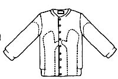
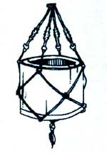
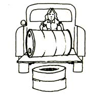

Lost your mittens already? Don't fret. For just a few pennies and a few minutes' time you can have more, says Helen O'Neal of Kansas City, Kansas.
Start with a shrunken, outmoded, or otherwise unwearable wool or cashmere sweater (the kind you can obtain very inexpensively at garage sales and thrift shops). Turn the garment wrong side out, lay it out on a flat surface, and lay your hands one at a time on the double thickness of material (right hand on the sweater's right side, left hand on the left side) so that the ribbed waistband will form the cuff of your mitten-to-be. (Allow plenty of length to go under your coat sleesves.) Trace around each hand with a pencil or pen.
Next, sew along the lines you've drawn. Then cut the mittens out of the sweater ... about 1/4" beyond the stitching. To prevent unraveling, bind the scissored edge with a 3/4-inch-wide strip of nylon tricot that you've cut from an old slip or pair of undies. (Tricot makes a soft, thin binding that stretches and won't fray.) Turn the mitten right side out, and it's ready to wear!
For socks to match your new hand-warmers, sew the armhole (body) end of each sweater sleeve closed, in a curved shape. Cut and bind as you did the mittens, then turn 'em right side out. The ribbed sleeve cuffs are now the tops of your soft, moisture-resistant socks.
"I'd heard from someone that ordinary household bleach-when poured onto automobile tires-helps improve traction on snowpacked roads," writes Ronald Geer of Bellefonte, Pennsylvania. "So one snowy day I tried it ... and it worked! I have no idea whether this practice produces any long-term harmful effects on the tires, but if you ever get stuck in a snowstorm on a return trip from the market ... and you just happen to have bought a bottle of bleach ... I can see no harm in helping yourself home by splashing some of the chemical on your tires."
Here's another cold-weather tip: To keep your front and rear car windows from frosting up overnight, spread about an inch of snow over them. Come morning, you'll find that the snow is much easier to remove than the ice that might otherwise have formed, according to Steve Matula of Nashotah, Wisconsin.
If you've ever tried to keep a fire going with damp or even frozen wood, you know it's no pleasant job. But Laura Wolfgang of Bally, Pennsylvania has a system that works for her. She brings in wood every day and stacks it in crisscross fashion (so air can circulate through the pile) on a big tray made from the top of an old refrigerator. Then she slides the tray under the cookstove, and stacks some more wood on another tray behind the stove. After 24 hours, all of the fuel is dry and ready to burn. (Each day, Mrs. Wolfgang puts what logs, etc., she's not using immediately into the woodbox ... and brings in more for her trays under and behind the stove.) "No more fussing with smoking fuel!" says Laura.
Gary Cadogan of Clinton, Iowa offers a tip that-he says-has helped several farmers in his area: To keep your livestock watering tanks from freezing, dig a small hole under the trough and, in it, place a couple of those small, round, kerosene-burning construction flare pots. The pots will burn all night and keep your stock's water supply just above freezing temperature ... even in the coldest weather.
When Paul Rattray of Applegate, Oregon rises each morning to work around his farm, he fills a bucket with live coals from the wood heater. Then he carries the hot pail with him to his various worksites and uses the device as a hand-warmer. "The bucket retains its heat for more than two hours," Paul says, adding: "When I'm done, I simply dump the ashes onto the compost pile."
"We raise cattle, dogs, geese, and many other sometimes unfriendly critters," says Lucy Feeney of Hartsel, Colorado, "and we used to have a constant problem keeping gates and stalls open or closed as needed. We've come up with an inexpensive, highly effective solution to this problem, however ... namely, recycled seat belts. " Lucy has found that old automobile seat belts (available in limitless quantity from any junkyard) can be made into marvelous animal-proof gate-fasteners. In addition, the belts can be used to keep toolboxes and storage bins shut tight, hang shovels and other implements on a wall, or to restrain an animal for the farrier or veterinarian. "When they're nailed, screwed, bolted, or wrapped securely in place," Ms. Feeney says, "the belts are virtually unbreakable, yet quite easily disengaged. I can't begin to list the many latching and hanging purposes these 'safety straps' can serve around the homestead. Tell you the truth, I don't know how we ever got along without'em!"
Two common cooking ingredients in your kitchen can also serve as a very effective burn treatment, according to Robert L. Langston of Colona, Illinois. Ordinary baking soda and fresh or bottled lemon juice-when promptly and properly applied-reduce the pain of (and often eliminate the blister caused by) steam or hot appliance burns. Immediately after you sustain such an Injury, wet the affected area with lemon juice, then spread on a 1/4-inch-thick layer of baking soda. Slowly wet the baking soda with more lemon juice, and when the first coating of the powder is thoroughly moistened add a second, thinner layer ... and dampen it as before. Now allow the mixture to dry completely. It will cake and crack, and can be removed with cool water in about 30 to 45 minutes. Robert says: "I learned this remedy from my mother many years ago, and I have yet to develop any blisters when I've begun the treatment within 20 seconds after being burned."
When you build a storage cabinet, suggests Eric Warren of Austin, Texas, paint the shelves and walls of the interior with a hard-setting white enamel. The enamel will make any spill easier to wipe up, and-for the life of the cabinet-the white paint inside will reflect external light whenever you open the unit's doors so that you can see what's stored there.
Are you riding or working your horse during the cold weather? Darla Meadows of Holcombe, Wisconsin asks you to please take a couple of minutes to hold the mouthpiece of the bit in your hands and warm it up before you present it to the animal. An icy cold bit, she explains, is a shock to the teeth and a pain to a sensitive tongue. And Darla has another hint to promote better human-equine relations: Since a horse that is stabled a lot tends to get bored, why not hang a tetherball from the ceiling of the creature's stall ... or perhaps an empty bleach bottle with a few marbles inside to rattle? Your horse may also like a basketball to kick around or push with his nose. "Each of my stallions has a 'toy' that he enjoys playing with," Ms. Meadows reports.
There's one fail-proof way to stop a leak in a water or fuel pipe when absolutely nothing else will do It, promises Nolan Stone of Powell River, British Columbia. You can't make glue or tape stick to a wet pipe, Nolan goes on, but what you can do is cut a strip of rubber-an inch or two wide and a foot or two long-from an old inner tube, wind it around the pipe as tightly as you can to cover the leak (overlapping the strip so as to leave no gaps), and cinch the last turn underneath the one before to hold the "bandage" in place. "It's simple," says Nolan, "and it works."
A neighbor introduced Bob and Sandy Aguilar of Palmyra, Nebraska to what has become one of their family's favorite foods: canned potatoes. "Just wash those tiny spuds you have no other use for," they write, "fill your jars, add salt and boiling water, and pressure-can. Since we don't have a good root cellar, we've tried the method with larger tubers that have been peeled and cubed, and found that it also works well with them. Later on, you can drain the potatoes and add them to soups or stews, or just brown them lightly in butter. They're delicious ... and handy in emergencies."
Why not do as Dave and Sondra Porter of Willow, Alaska do and let Mother Nature make attractive plant containers for you? It's easy: Just forage the woods for small logs whose cores have rotted out, saw off sections of the trunks, and cover one end of each hollow timber with a piece of board that has a drain hole in it. The Porters say these planters look great in a hemp pot hanger.
If you have a closet rod to hang, Wilma Heffelfinger of Ozark, Missouri has an idea for you: Just nail two canning jar rings to the wall and slip in your dowel. Wilma says, "This works as well as anything you can buy ... and is a lot less expensive."
You'll find it easy, says Judith Silverstein of San Ysidro, New Mexico, to unload a 55-gallon drum-or any closed barrel of water, gas, kerosene, etc.-from your truck, even by yourself, if you'll place a stack of old rimless tires on the ground below the tailgate. First make sure the container's plugs or seals are securely in place, then tip the barrel and let it down onto its side (use another old tire to maneuver It over more gently, If you like). Finally, roll the container to the edge of the tailgate and gently ease it off, so that it lands on the tires. Make sure the tires are placed so the barrel will drop more-or-less squarely in the middle-and not bounce or roll off-and you'll find you can usually stand the vessel upright right off its rubber cushioning.
Do you have trouble with large air bubbles in your homemade bread, especially when the recipe has eggs in it? Elaine Myers of Rosburg, Washington has an answer for you: Merely give each loaf a twist, lengthwise, before putting it in the baking pan.
Rosanne Miller of Squaw Lake, Minnesota wants to pass along her grandmother's method for cleaning silver. "Place your knives, forks, and spoons in a container," Rosanne says, "and completely cover them with sour milk." (Rosanne's grandmother lived on a dairy farm). "After eight to ten hours, pour off the milk, rinse the silverware in cold water, rinse it again in hot water, and wipe the pieces dry. Your tableware should be gleaming now!"
Even badly rusted objects will come clean when you soak them in regular household vinegar (the cheap white kind), writes Karen Maresca of Mill Valley, California. Use a glass or plastic container (anything but metal) and change the soaking solution now and then. With very little effort on your part, the rust will be bubbled away. Afterwards, just rinse off the de-rusted articles and-if necessary-polish them.
Karen says she's especially glad to have discovered this method because "it's low-cost, involves relatively little effort, and is not harmful to the planet in any way".
OK. Now it's YOUR turn! We've all come up with practical, down-home, time-tested solutions to the frustrating little problems that bug us every day. Let's hear YOUR best "horse sense" idea.
Send your pointers to Down-Home Country Lore, P.O. Box 70, Hendersonville, N.C. 28739, and I'll make sure that the most useful suggestions I receive will appear in upcoming editions of this feature. As always, a one-year subscription-or extension of an existing subscription-will be sent to each contributor whose tip is printed in this column.-MOTHER.
|
|
 |
 |
|
 |
|
|